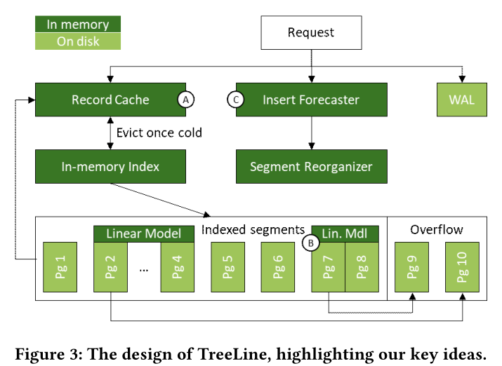
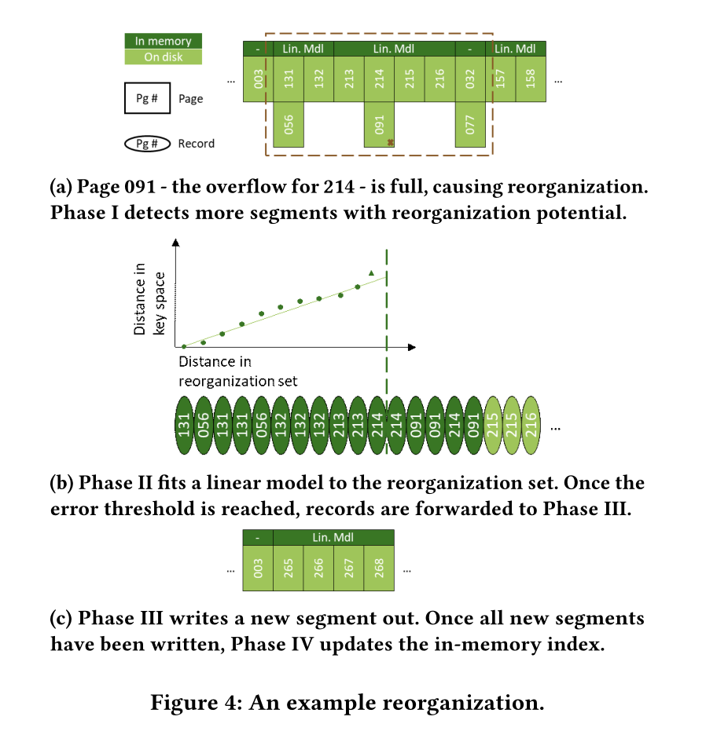
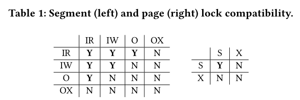
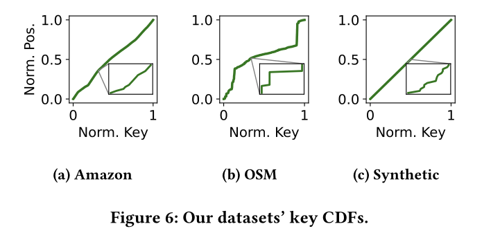
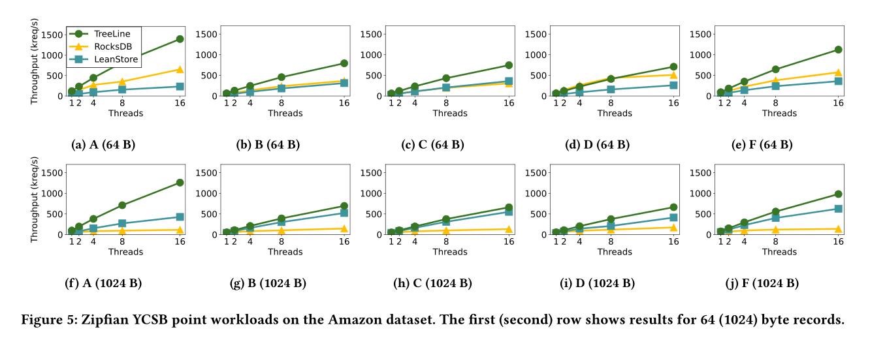
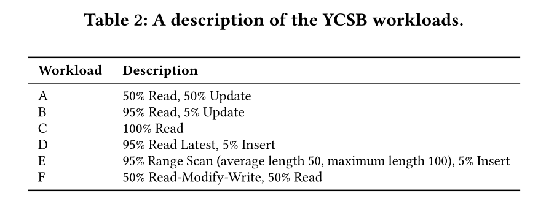
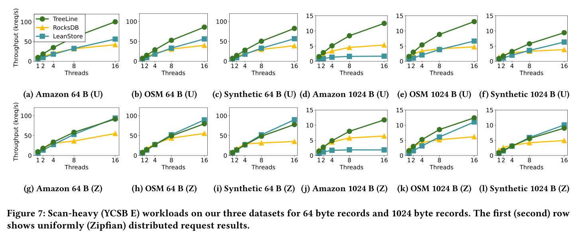
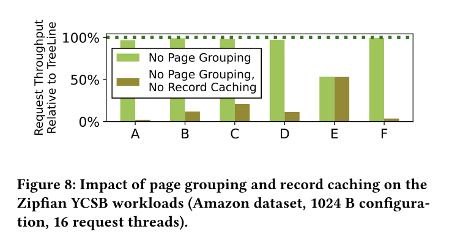
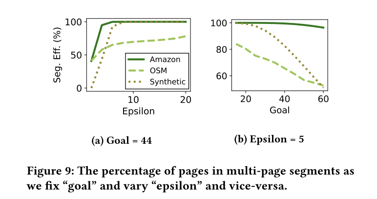
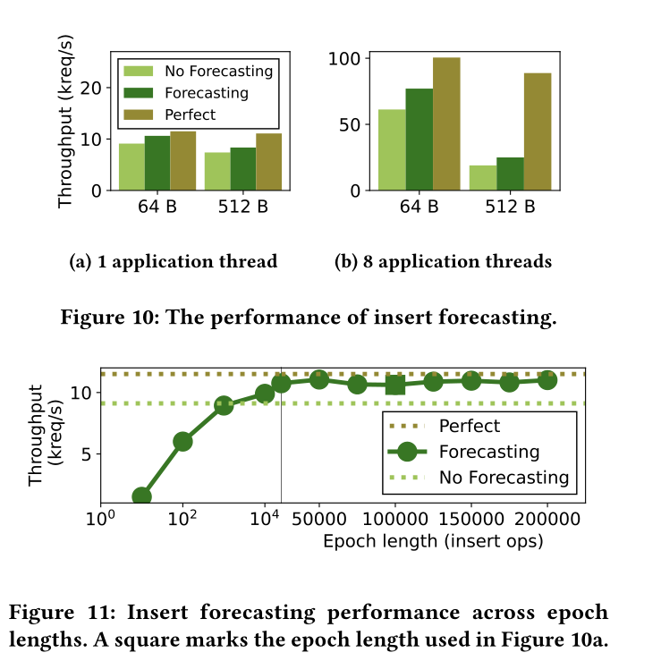

VLDB 2023 treeline
摘要
LSM Tree将随机写变为顺序写，提高了写性能，但是它必须依赖于压缩以及布隆过滤器来维持读性能。但是NVMe SSD的出现，读写性能的Tradeoff就不需要再考虑了，在并发的情况下，在原地更新的方案也可以提供优异的读写性能，是一个可以替代LSM Tree的方案。
3个点
- record caching for efficient point operation
- 将热数据记录尽可能缓存，并且存储到尽可能一个page上
- page grouping for high-performance range scans
- 对page分组，将key值相邻的优先分到一起，让他们连续存储，对scan更友好。
- 对于索引只需要存page group的索引，可以让内存中的索引表变得更小
- insert forecasting to reduce the reorganization costs of accommodating new records
- 根据观察到的插入，预测在page需要预留出多大的空间

RocksDB和LevelDB都是使用LSM树的，LSM树的基础概念就是writebatch，先在内存写，memtable到一定规模了再全部写入到存储，到存储就不可变了，并且存储会进行异步的压缩。核心思想就是将随机写变为顺序写，但是影响读性能，一条记录可能出现在多个块上。但是这种trade off在传统磁盘是个很好的选择，但是现在NVMe SSD，在并行度足够高时，随机写是可以达到顺序写入吞吐量峰值的。
TreeLine
查询流程：先查内存的缓存，如果缓存未命中那么查内存index，映射到对应的数据段，把对应的page读到内存，如果还是没找到，就去OverFlow page找，如果还是没找到，就返回未找到。
数据更改流程：insert，update，delete先创建或者更新缓存中的record的entry，如果没在内存，那TreeLine先用index找对应的page，读入内存，然后执行操作
范围查询：和查询一样，但是缓存和磁盘都得查，然后以key的顺序来合并，如果有重复的，缓存数据将覆盖disk的数据
1. Record Cache(Key Idea A)
Cache Admittance
当TreeLine同意记录进入缓存时，都会给一个优先级$0\rightarrow P_{max} $后续的每次访问都会增加优先级。
数据记录在三种情况下可以进入缓存，
- 用户的任意数据修改（insert，update，delete），赋予初始优先级$P{mid}=P{max}/2$，如果缓存未缓存这个entry，TreeLine会清理一些entry
- 查询未缓存的记录，赋予初始优先级$P_{mid}$并缓存
- 在查询或修改时，缓存同一个page的数据，赋予初始优先级$P_1$
Cache Evivtion
使用clock algorithm，周期性的降低优先级直到找到一个entry优先级为0，如果该entry被修改过，那么找下一个，因为如果被修改过，就需要先IO将其刷回到磁盘，我们希望减少IO操作，如果entry全是脏的，就把所有脏entry一起写入，到一个page
2. In-Memory Index
B+树索引，在换出脏页时会映射到合适的位置去写，以及查询时，映射到合适的位置去读
index存在$key \rightarrow segment$的映射segment到page直接用二分查，因为是线性模型，segment有序
index的更新只在reorganization时发生
Pages and Segments
Page，沿用LeanStore的Page设计，该Page负责一个范围的key值，该范围在创建时定义
Segment是1个或多个page组成
3. Supproting a Growing Database(Key Idea B)
Overflow Pages
当data page满了，TreeLine分配一个Overflow page，这个page不被index索引，这个Overflow page布局类似base page，继承负责相同的key range，当Overflow page满了，这个Segment就得reorganized
Page Orderings
physical order，物理存储的顺序
logical order ，ssd driver自己抽象出来的逻辑上的顺序
key order，TreeLine中每个page负责一个key range，以这个key的下界排序
Reorganization
4个阶段，range detection后是一次或者多次model building和segment write-out，再是index update

Phase 1：Range detection
在某个Segment的overflow page满了之后需要reorganization，会将相邻的r(默认为5)个Segment检查，如果存在overflow page就一起reorganize，也就是一次性最多reorganization 2r+1个segment
Phase 2：Model building
PGM index’s piecewise linear regression algorithm，我的理解是用这个可以将page更合理的放在尽可能少的Segment中。
线性模型让空间效率提高，并且提供了可接受的准确率。我们可以通过配置错误阈值 epsilon来实现一个正确率和空间利用率的trade off
一旦到错误阈值，Phase 2结束，已经处理过的数据records会发送到Phase 3作为write out set，并且在重复Phase 2之前移出reorganization set。
第二阶段的迭代会在3个情况下停止
- reorganization set适合单个页面，无需任何模型，直接转发到Phase3
- 已经超过为reorganization预留的内存空间了，在模型构建期间，保存处理过record的page都在内存里，此时直接转发records和模型到Phase3
- 处理了足够的record来适应16 page segment
Phase 3： Segment Write-out
从Phase2接收到Write out set和model，一个linear model就是一个segment，在磁盘上找一个连续空间将其存储。page数量由write out set 和自定义参数goal来确定，goal的含义是，一个page的存储率，也就是刚重组时填多少个record。而且Treeline的Segment大小只能为1，2，4，8，16pages，所以如果发过来10个page，只会分配8page的segment，将剩下的两个page的record返回reorganization set。并且生成segmentID
Phase 4：Index Update
当reorganization set为空时则更新in-memory index，表明reorganization结束了。之前的所有entries相关的数据全部删除，将SegmentID标为0，并加入到free list中，以后reorganization可能会将其覆盖
4. Insert Forecasting(Key Idea C)
Tracking Insert
把Workload分为Epochs，每x个insert(默认100000)为一个epoch，每个epoch建立b个partitions的直方图，每个epoch使用前一个epoch生成的直方图预测未来的可能插入，分区按照上一个epoch的数据来确定上下界。
Generating Forecasts
通过这个直方图预测未来f个epoch的直方图
Utilizing Forecast
设置目标Goal，尽可能减少reorganization的同时减少空间浪费
Interaction with Page Grouping
预测插入可能会影响Goal参数的设定，进而影响epsilon参数，再影响到线性模型的构建
5. Thread Synchronization
两种锁，Segment lock和Page lock

Segment locks can be acquired in Intention Read, Intention Write, reOrganization or reOrganization eXclusive mode. Page locks can be acquired in Shared or eXclusive mode.
reorganization在第一阶段结束加O锁，第四阶段开始加OX锁
Evaluation
和LSM-Based system及其他update in place system比较

数据集线性与否，累计分布函数，越是一条直线，越容易被linear model拟合
系统对比
RocksDB：LSM-Based system
LeanStore：先进的 update-in-place KV system


- 利用缓存record来减少写放大问题
- 提供高效的读
hot key不在同一个page，并且record 64B，page4KB，读写放大太严重，hot key的record不全在内存。
RocksDB的LSM设计导致需要读放大

三个真实数据集下跑YCSB E
当record是1024B，page是4KB的时候，LeanStore的性能就上来了，因为读写放大问题不再严重
Record Cache和Page Grouping的性能提升

AMZON的数据集，Record大小为1024，16个线程
结论
- Record Cache在读写负载中减少了读写放大
- Page grouping的开销不大，不会造成性能影响
- Page grouping可以加速Scan
Page Grouping的两个参数对性能的影响

Epsilon越大，意味着错误阈值越高，可以有更多的record来拟合模型，并且可以一个Segment可以有更多的page
Goal越大，意味着一个page预留的位置越小，后续reorganization次数越多
Insert forecasting的影响

50读50插入，Epoch为100000，直方图分区数b为20000，预测的为未来100个epoch。
在record为64B时更有效，这意味着，reorganization次数会因为预测减少的效果更显著。
epoch粒度越细，不仅预测不准而且影响性能